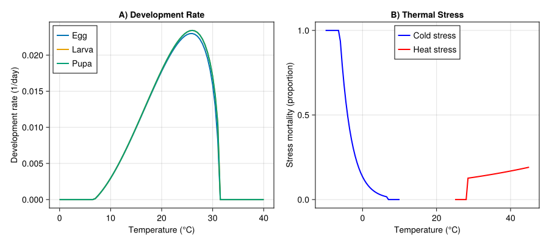
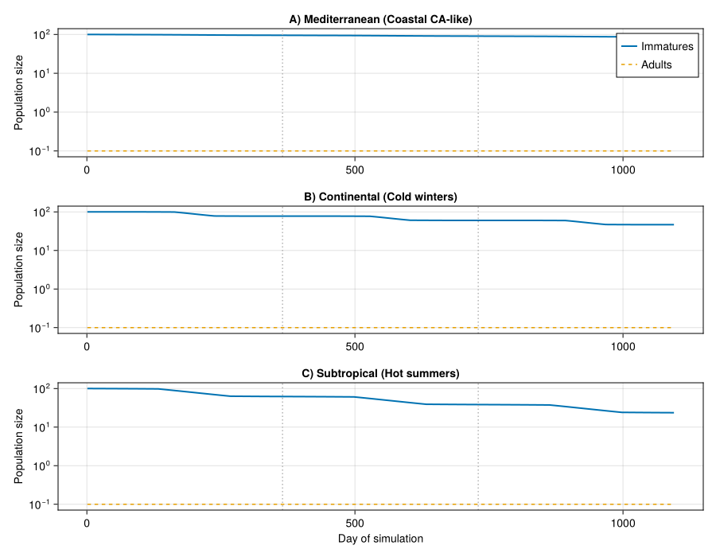
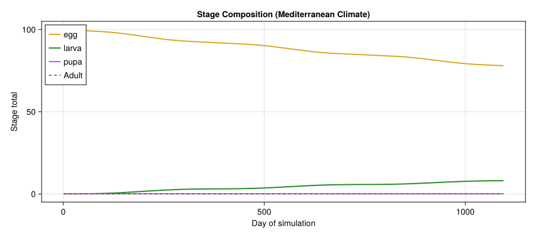
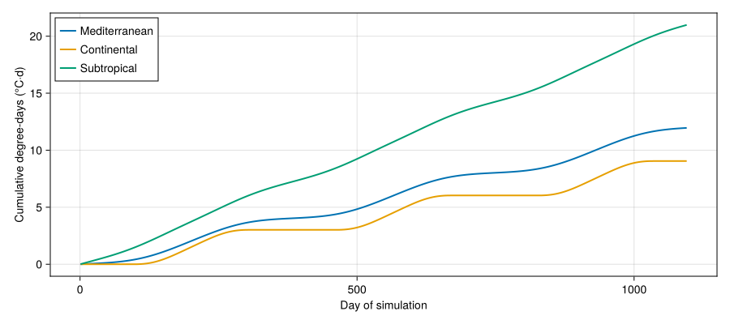
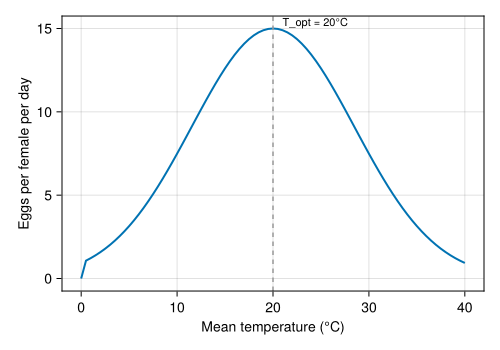

Light Brown Apple Moth Invasion Potential
PhysiologicallyBasedDemographicModels.jl
- Introduction
- Biology and Life History
- Model Description
- Implementation
- Temperature Response Curves
- Population Dynamics Across Climates
- Stage Structure Over Time
- Degree-Day Accumulation and Generation Time
- Temperature–Fecundity Relationship
- Parameter Summary
- Summary and Interpretation
- References
Introduction
The light brown apple moth (Epiphyas postvittana, LBAM) is an extremely polyphagous tortricid leafroller native to southeastern Australia. With a documented host range exceeding 500 plant species across 121 families, it is one of the most generalist herbivorous insects known. LBAM was detected in California in 2007, triggering extensive eradication efforts and a contentious debate about its potential to establish across North America.
Gutierrez et al. (2010) developed a physiologically based demographic model (PBDM) to assess the invasive potential of LBAM under varying climatic conditions. Their analysis showed that while LBAM can persist in mild, Mediterranean-type climates, it is strongly limited by both cold winters and hot, dry summers. This vignette reimplements their core population dynamics using PhysiologicallyBasedDemographicModels.jl.
Biology and Life History
LBAM develops through four life stages: egg, larva (5–6 instars), pupa, and adult. Key biological features relevant to modeling include:
- No diapause: unlike many temperate Lepidoptera, LBAM develops continuously whenever temperatures permit, leading to overlapping generations year-round in mild climates.
- Thermal biology: development occurs between approximately 7°C and 31°C, with optimum rates near 22–25°C. The nonlinear relationship between temperature and development rate is well described by a Brière-type function.
- Polyphagy: larvae feed on foliage and fruit of an enormous range of hosts, including grapevines, citrus, pome fruit, ornamentals, and native vegetation. In Mediterranean climates, weed hosts that dry out in summer can limit population persistence.
- Fecundity: females lay 150–700 eggs depending on host quality and temperature.
Model Description
The PBDM follows the Manetsch/Vansickle distributed-delay framework, where each life stage is represented as a distributed-delay process with k substages. The delay parameter $\tau$ (in degree-days, DD) controls the mean development time, while k controls the shape of the stage-duration distribution (higher k gives a tighter, more peaked distribution).
Development rate at temperature $T$ is computed using a Brière-type function:
\[r(T) = \begin{cases} a \, T \, (T - T_L) \, \sqrt{T_U - T} & \text{if } T_L < T < T_U \\ 0 & \text{otherwise} \end{cases}\]
where $T_L$ is the lower developmental threshold, $T_U$ is the upper threshold, and $a$ is a scaling constant. Daily degree-day accumulation is the integral of this rate over the daily temperature cycle.
Stage-specific mortality is temperature-dependent, with elevated mortality at thermal extremes. Fecundity is a function of adult age (in physiological time) and temperature-dependent performance.
Implementation
Setup
using PhysiologicallyBasedDemographicModels
using CairoMakie
using StatisticsDevelopment Rate Parameters
We parameterize Brière-type development rate functions for each immature stage. Parameters are based on the reanalysis by Gutierrez et al. (2010) of laboratory data from Danthanarayana (1975).
# Lower developmental thresholds (°C)
T_L_egg = 7.5
T_L_larva = 7.5
T_L_pupa = 7.5
# Upper developmental thresholds (°C)
T_U_egg = 31.3
T_U_larva = 31.5
T_U_pupa = 31.5
# Brière scaling constants (fitted to match observed degree-day requirements)
a_egg = 2.0e-5
a_larva = 2.0e-5
a_pupa = 2.0e-5
# Development rate models
dev_egg = BriereDevelopmentRate(a_egg, T_L_egg, T_U_egg)
dev_larva = BriereDevelopmentRate(a_larva, T_L_larva, T_U_larva)
dev_pupa = BriereDevelopmentRate(a_pupa, T_L_pupa, T_U_pupa)BriereDevelopmentRate{Float64}(2.0e-5, 7.5, 31.5)Degree-Day Requirements and Distributed Delays
Each stage is modeled as a distributed delay with mean duration $\tau$ (in DD) and k substages controlling the variance of the stage-duration distribution.
# Degree-day requirements (above T_L) from Gutierrez et al. (2010)
tau_egg = 120.8 # DD for egg stage
tau_larva = 335.0 # DD for larval stage
tau_pupa = 142.0 # DD for pupal stage
# Number of substages (controls variance; k ~ 20-40 typical for insects)
k_egg = 25
k_larva = 30
k_pupa = 25
# Distributed delays
delay_egg = DistributedDelay(k_egg, tau_egg)
delay_larva = DistributedDelay(k_larva, tau_larva)
delay_pupa = DistributedDelay(k_pupa, tau_pupa)DistributedDelay{Float64}(25, 142.0, [0.0, 0.0, 0.0, 0.0, 0.0, 0.0, 0.0, 0.0, 0.0, 0.0 … 0.0, 0.0, 0.0, 0.0, 0.0, 0.0, 0.0, 0.0, 0.0, 0.0])Life Stage Assembly
We assemble LifeStage objects that combine the distributed delay, development rate function, and a baseline daily mortality rate for each stage.
# Baseline daily mortality rates
mu_egg = 0.01
mu_larva = 0.02
mu_pupa = 0.01
# Life stages
egg = LifeStage(:egg, delay_egg, dev_egg, mu_egg)
larva = LifeStage(:larva, delay_larva, dev_larva, mu_larva)
pupa = LifeStage(:pupa, delay_pupa, dev_pupa, mu_pupa)
# Population (immature stages only for basic dynamics)
lbam = Population(:LBAM, [egg, larva, pupa])Population{Float64}(:LBAM, LifeStage{Float64, BriereDevelopmentRate{Float64}}[LifeStage{Float64, BriereDevelopmentRate{Float64}}(:egg, DistributedDelay{Float64}(25, 120.8, [0.0, 0.0, 0.0, 0.0, 0.0, 0.0, 0.0, 0.0, 0.0, 0.0 … 0.0, 0.0, 0.0, 0.0, 0.0, 0.0, 0.0, 0.0, 0.0, 0.0]), BriereDevelopmentRate{Float64}(2.0e-5, 7.5, 31.3), 0.01), LifeStage{Float64, BriereDevelopmentRate{Float64}}(:larva, DistributedDelay{Float64}(30, 335.0, [0.0, 0.0, 0.0, 0.0, 0.0, 0.0, 0.0, 0.0, 0.0, 0.0 … 0.0, 0.0, 0.0, 0.0, 0.0, 0.0, 0.0, 0.0, 0.0, 0.0]), BriereDevelopmentRate{Float64}(2.0e-5, 7.5, 31.5), 0.02), LifeStage{Float64, BriereDevelopmentRate{Float64}}(:pupa, DistributedDelay{Float64}(25, 142.0, [0.0, 0.0, 0.0, 0.0, 0.0, 0.0, 0.0, 0.0, 0.0, 0.0 … 0.0, 0.0, 0.0, 0.0, 0.0, 0.0, 0.0, 0.0, 0.0, 0.0]), BriereDevelopmentRate{Float64}(2.0e-5, 7.5, 31.5), 0.01)])Temperature-Dependent Mortality
LBAM experiences elevated mortality at temperature extremes. Cold stress increases below approximately 5°C, and heat stress increases above approximately 30°C. Following the PBDM approach, we define stress functions that return a daily mortality multiplier.
"""
cold_stress(T_min; T_crit=2.0, k_cold=0.1)
Daily cold-stress mortality multiplier. Increases exponentially as
minimum temperature falls below `T_crit`.
"""
function cold_stress(T_min; T_crit=2.0, k_cold=0.1)
T_min >= T_crit && return 0.0
return 1.0 - exp(-k_cold * (T_crit - T_min))
end
"""
heat_stress(T_max; T_crit=33.0, k_heat=0.08)
Daily heat-stress mortality multiplier. Increases exponentially as
maximum temperature exceeds `T_crit`.
"""
function heat_stress(T_max; T_crit=33.0, k_heat=0.08)
T_max <= T_crit && return 0.0
return 1.0 - exp(-k_heat * (T_max - T_crit))
endMain.Notebook.heat_stressFecundity Model
Fecundity in LBAM is temperature-dependent, with maximum oviposition occurring at intermediate temperatures (~20–25°C). We model per-capita daily egg production as a function of mean daily temperature, scaled to produce a lifetime fecundity of approximately 300 eggs at optimal temperature.
"""
fecundity(T_mean; F_max=15.0, T_opt=22.0, T_range=12.0)
Daily per-capita fecundity (eggs per adult female) as a Gaussian
function of mean temperature, peaking at `T_opt`.
"""
function fecundity(T_mean; F_max=15.0, T_opt=22.0, T_range=12.0)
T_mean <= 0.0 && return 0.0
return F_max * exp(-((T_mean - T_opt) / T_range)^2)
endMain.Notebook.fecunditySynthetic Weather Generator
To demonstrate the model across contrasting climates, we generate synthetic daily weather representing three scenarios relevant to the LBAM invasion risk assessment: a mild Mediterranean climate (similar to coastal California), a continental climate with cold winters, and a subtropical climate with hot summers.
"""
generate_weather(; T_mean_annual, T_amplitude, T_diurnal, n_years)
Generate a synthetic daily weather series using sinusoidal annual and
diurnal temperature cycles.
"""
function generate_weather(;
T_mean_annual::Float64 = 15.0,
T_amplitude::Float64 = 8.0,
T_diurnal::Float64 = 10.0,
n_years::Int = 3
)
n_days = 365 * n_years
days = DailyWeather[]
for d in 1:n_days
doy = mod(d - 1, 365) + 1
# Sinusoidal annual cycle (peak at day 200 ~ mid-July NH)
T_base = T_mean_annual + T_amplitude * sin(2π * (doy - 110) / 365)
T_mean = T_base
T_min = T_base - T_diurnal / 2
T_max = T_base + T_diurnal / 2
push!(days, DailyWeather(T_mean, T_min, T_max))
end
return WeatherSeries(days)
end
# Three contrasting climates
weather_mediterranean = generate_weather(
T_mean_annual = 15.5, T_amplitude = 6.0, T_diurnal = 10.0, n_years = 3
)
weather_continental = generate_weather(
T_mean_annual = 10.0, T_amplitude = 15.0, T_diurnal = 12.0, n_years = 3
)
weather_subtropical = generate_weather(
T_mean_annual = 22.0, T_amplitude = 5.0, T_diurnal = 8.0, n_years = 3
)WeatherSeries{Float64}(DailyWeather{Float64}[DailyWeather{Float64}(17.23159501684777, 13.23159501684777, 21.23159501684777, 0.0, 12.0, 0.0, 0.5), DailyWeather{Float64}(17.20641091506352, 13.206410915063518, 21.20641091506352, 0.0, 12.0, 0.0, 0.5), DailyWeather{Float64}(17.182647257179255, 13.182647257179255, 21.182647257179255, 0.0, 12.0, 0.0, 0.5), DailyWeather{Float64}(17.16031108487968, 13.16031108487968, 21.16031108487968, 0.0, 12.0, 0.0, 0.5), DailyWeather{Float64}(17.139409016854692, 13.139409016854692, 21.139409016854692, 0.0, 12.0, 0.0, 0.5), DailyWeather{Float64}(17.11994724683816, 13.119947246838159, 21.11994724683816, 0.0, 12.0, 0.0, 0.5), DailyWeather{Float64}(17.10193154177255, 13.10193154177255, 21.10193154177255, 0.0, 12.0, 0.0, 0.5), DailyWeather{Float64}(17.08536724010009, 13.08536724010009, 21.08536724010009, 0.0, 12.0, 0.0, 0.5), DailyWeather{Float64}(17.070259250180847, 13.070259250180847, 21.070259250180847, 0.0, 12.0, 0.0, 0.5), DailyWeather{Float64}(17.056612048838296, 13.056612048838296, 21.056612048838296, 0.0, 12.0, 0.0, 0.5) … DailyWeather{Float64}(17.559713386852536, 13.559713386852536, 21.559713386852536, 0.0, 12.0, 0.0, 0.5), DailyWeather{Float64}(17.520803546325457, 13.520803546325457, 21.520803546325457, 0.0, 12.0, 0.0, 0.5), DailyWeather{Float64}(17.48322098837658, 13.48322098837658, 21.48322098837658, 0.0, 12.0, 0.0, 0.5), DailyWeather{Float64}(17.44697684952892, 13.44697684952892, 21.44697684952892, 0.0, 12.0, 0.0, 0.5), DailyWeather{Float64}(17.412081869703034, 13.412081869703034, 21.412081869703034, 0.0, 12.0, 0.0, 0.5), DailyWeather{Float64}(17.378546389034533, 13.378546389034533, 21.378546389034533, 0.0, 12.0, 0.0, 0.5), DailyWeather{Float64}(17.346380344810104, 13.346380344810104, 21.346380344810104, 0.0, 12.0, 0.0, 0.5), DailyWeather{Float64}(17.315593268522843, 13.315593268522843, 21.315593268522843, 0.0, 12.0, 0.0, 0.5), DailyWeather{Float64}(17.286194283047898, 13.286194283047898, 21.286194283047898, 0.0, 12.0, 0.0, 0.5), DailyWeather{Float64}(17.25819209993914, 13.25819209993914, 21.25819209993914, 0.0, 12.0, 0.0, 0.5)], 1)Simulation Driver
We use the coupled population API to integrate distributed-delay population dynamics with temperature-dependent mortality and fecundity. Adults emerging from the pupal stage produce eggs that enter the egg delay. Three BulkPopulation components track the stage totals (synced from their underlying DistributedDelay objects), while a fourth tracks the free-living adult pool:
"""
simulate_lbam(pop, weather; n0=100.0)
Run a forward simulation of LBAM population dynamics using the coupled
population API with distributed-delay stages.
"""
function simulate_lbam(pop::Population, weather::WeatherSeries; n0::Float64=100.0)
n_days = length(weather.days)
stage_names_vec = [s.name for s in pop.stages]
ns = length(stage_names_vec)
# Initialize egg stage
egg_stage = pop.stages[1]
init_per_substage = n0 / egg_stage.delay.k
for i in 1:egg_stage.delay.k
egg_stage.delay.W[i] = init_per_substage
end
# BulkPopulations mirror delay totals; adult pool is separate
bp_stages = [BulkPopulation(s.name, delay_total(s.delay)) for s in pop.stages]
bp_adult = BulkPopulation(:adult, 0.0)
# Phenology: LBAM generational phase driven by the egg-stage Brière
# development rate. Each "generation" is ~597.8 DD = τ_egg + τ_larva + τ_pupa.
gen_dd = tau_egg + tau_larva + tau_pupa
phen = PhenologyState(:phen,
[(:gen1, gen_dd), (:gen2, 2*gen_dd), (:gen3, 3*gen_dd),
(:gen4, 4*gen_dd), (:gen5, 5*gen_dd)];
base_temp=T_L_egg,
dd_fn=(w, day, p) -> degree_days(p.pop.stages[1].dev_rate, w.T_mean))
# Single rule: step delays manually, update adult pool
dynamics = CustomRule(:dynamics, (sys, w, day, p) -> begin
adult_pool = total_population(sys[:adult].population)
matured = zeros(ns)
for (i, stage) in enumerate(p.pop.stages)
dd = degree_days(stage.dev_rate, w.T_mean)
mu_base = stage.μ
mu_cold = cold_stress(w.T_min)
mu_heat = heat_stress(w.T_max)
mu_total = min(1.0, mu_base + mu_cold + mu_heat)
inflow = 0.0
if i == 1
daily_fec = fecundity(w.T_mean)
inflow = adult_pool * daily_fec * 0.5
elseif i > 1
inflow = matured[i - 1]
end
matured[i] = step_delay!(stage.delay, dd, inflow; μ=mu_total).outflow
set_value!(sys[stage.name].population, delay_total(stage.delay))
end
new_adult = adult_pool * 0.92 + matured[ns]
set_value!(sys[:adult].population, new_adult)
(matured_last=matured[ns],)
end)
sys = PopulationSystem(
[s.name => bp for (s, bp) in zip(pop.stages, bp_stages)]...,
:adult => bp_adult;
state=[phen])
prob = PBDMProblem(sys, weather, (1, n_days);
rules=[dynamics], p=(pop=pop,))
sol = solve(prob, DirectIteration())
# Reconstruct original interface — pull DD from the PhenologyState snapshot
totals = zeros(n_days, ns)
for (i, sn) in enumerate(stage_names_vec)
totals[:, i] = sol[sn]
end
dd_accum = [snap.cum_dd for snap in sol.state_history[:phen]]
final_phase = sol.state_history[:phen][end].phase
return (; t=1:n_days, totals, stage_names=stage_names_vec,
dd_accum=dd_accum,
fec_out=zeros(n_days), # fecundity tracked in rule_log
adults=sol[:adult],
final_phase=final_phase)
endMain.Notebook.simulate_lbamRunning the Simulations
# Run across the three climate scenarios
sim_med = simulate_lbam(
Population(:LBAM_med, [
LifeStage(:egg, DistributedDelay(k_egg, tau_egg), dev_egg, mu_egg),
LifeStage(:larva, DistributedDelay(k_larva, tau_larva), dev_larva, mu_larva),
LifeStage(:pupa, DistributedDelay(k_pupa, tau_pupa), dev_pupa, mu_pupa)
]),
weather_mediterranean
)
sim_cont = simulate_lbam(
Population(:LBAM_cont, [
LifeStage(:egg, DistributedDelay(k_egg, tau_egg), dev_egg, mu_egg),
LifeStage(:larva, DistributedDelay(k_larva, tau_larva), dev_larva, mu_larva),
LifeStage(:pupa, DistributedDelay(k_pupa, tau_pupa), dev_pupa, mu_pupa)
]),
weather_continental
)
sim_sub = simulate_lbam(
Population(:LBAM_sub, [
LifeStage(:egg, DistributedDelay(k_egg, tau_egg), dev_egg, mu_egg),
LifeStage(:larva, DistributedDelay(k_larva, tau_larva), dev_larva, mu_larva),
LifeStage(:pupa, DistributedDelay(k_pupa, tau_pupa), dev_pupa, mu_pupa)
]),
weather_subtropical
)(t = 1:1095, totals = [99.9770070832025 0.010413458694509877 0.0; 99.95409088792732 0.02079013161455699 0.0; … ; 68.315028187016 12.25567144559103 9.970240448624199e-27; 68.29785178382303 12.261109943935043 1.0156283230217006e-26], stage_names = [:egg, :larva, :pupa], dd_accum = [0.012579458102967931, 0.02511923360409734, 0.03762155945980894, 0.050088680946880924, 0.06252285483411003, 0.07492634856657693, 0.08730143946193576, 0.09965041391809903, 0.11197556663164292, 0.12427919982621571 … 19.896540317049872, 19.90957494110679, 19.922550483867845, 19.93546902783502, 19.948332675921023, 19.96114355049076, 19.973903792418017, 19.986615560157315, 19.999281028830826, 20.011902389330224], fec_out = [0.0, 0.0, 0.0, 0.0, 0.0, 0.0, 0.0, 0.0, 0.0, 0.0 … 0.0, 0.0, 0.0, 0.0, 0.0, 0.0, 0.0, 0.0, 0.0, 0.0], adults = [0.0, 0.0, 0.0, 0.0, 0.0, 0.0, 0.0, 0.0, 0.0, 0.0 … 3.412341466486372e-55, 3.52238720468044e-55, 3.6355351527038926e-55, 3.751890396796919e-55, 3.8715635112163874e-55, 3.994670848472418e-55, 4.121334842573275e-55, 4.251684326013106e-55, 4.385854861290502e-55, 4.523989087802103e-55], final_phase = :pre)Temperature Response Curves
The Brière function captures the asymmetric thermal performance curve characteristic of ectotherms: a gradual rise from the lower threshold, a broad optimum, and a sharp decline near the upper lethal temperature.
fig = Figure(size = (900, 400))
# Panel A: Development rates
ax1 = Axis(fig[1, 1],
xlabel = "Temperature (°C)",
ylabel = "Development rate (1/day)",
title = "A) Development Rate"
)
temps = 0.0:0.5:40.0
lines!(ax1, collect(temps), [development_rate(dev_egg, T) for T in temps],
label = "Egg", linewidth = 2)
lines!(ax1, collect(temps), [development_rate(dev_larva, T) for T in temps],
label = "Larva", linewidth = 2)
lines!(ax1, collect(temps), [development_rate(dev_pupa, T) for T in temps],
label = "Pupa", linewidth = 2)
axislegend(ax1, position = :lt)
# Panel B: Stress mortality
ax2 = Axis(fig[1, 2],
xlabel = "Temperature (°C)",
ylabel = "Stress mortality (proportion)",
title = "B) Thermal Stress"
)
temps_cold = -10.0:0.5:10.0
temps_heat = 25.0:0.5:45.0
lines!(ax2, collect(temps_cold), [cold_stress(T) for T in temps_cold],
label = "Cold stress", linewidth = 2, color = :blue)
lines!(ax2, collect(temps_heat), [heat_stress(T) for T in temps_heat],
label = "Heat stress", linewidth = 2, color = :red)
axislegend(ax2, position = :ct)
fig<div id="fig-temp-response">

Figure 1: Temperature-dependent development rates and mortality stress functions for LBAM.
</div>
Population Dynamics Across Climates
The three climate scenarios illustrate how thermal regime controls LBAM population persistence and growth. In the Mediterranean climate, populations build through multiple overlapping generations; in the continental climate, cold winters cause periodic crashes; in the subtropical climate, heat stress limits summer population growth.
fig2 = Figure(size = (900, 700))
scenarios = [
(sim_med, "A) Mediterranean (Coastal CA-like)"),
(sim_cont, "B) Continental (Cold winters)"),
(sim_sub, "C) Subtropical (Hot summers)")
]
for (idx, (sim, title_str)) in enumerate(scenarios)
ax = Axis(fig2[idx, 1],
xlabel = idx == 3 ? "Day of simulation" : "",
ylabel = "Population size",
title = title_str,
yscale = log10
)
total_immatures = vec(sum(sim.totals, dims=2))
# Replace zeros for log scale
total_immatures = max.(total_immatures, 1e-1)
adult_pop = max.(sim.adults, 1e-1)
lines!(ax, collect(sim.t), total_immatures, label = "Immatures", linewidth = 2)
lines!(ax, collect(sim.t), adult_pop, label = "Adults", linewidth = 1.5, linestyle = :dash)
# Mark year boundaries
for yr in 1:2
vlines!(ax, [365.0 * yr], color = :gray70, linestyle = :dot)
end
if idx == 1
axislegend(ax, position = :rt)
end
end
fig2<div id="fig-population-dynamics">

Figure 2: Simulated LBAM population dynamics under three climate scenarios over three years.
</div>
Stage Structure Over Time
The distributed-delay framework naturally produces realistic stage-duration distributions. In mild climates, overlapping generations lead to a continuous presence of all stages. The following plot shows the stage composition for the Mediterranean climate scenario.
fig3 = Figure(size = (900, 400))
ax3 = Axis(fig3[1, 1],
xlabel = "Day of simulation",
ylabel = "Stage total",
title = "Stage Composition (Mediterranean Climate)"
)
colors = [:goldenrod, :forestgreen, :mediumpurple]
for (i, sname) in enumerate(sim_med.stage_names)
stage_data = max.(sim_med.totals[:, i], 1e-1)
lines!(ax3, collect(sim_med.t), stage_data,
label = string(sname), linewidth = 2, color = colors[i])
end
adult_data = max.(sim_med.adults, 1e-1)
lines!(ax3, collect(sim_med.t), adult_data, label = "Adult",
linewidth = 1.5, linestyle = :dash, color = :firebrick)
axislegend(ax3, position = :lt)
fig3<div id="fig-stage-structure">

Figure 3: Stage structure of simulated LBAM population in the Mediterranean climate, showing continuous overlapping generations.
</div>
Degree-Day Accumulation and Generation Time
The cumulative degree-day trajectory reveals how quickly generations turn over in different climates. A full LBAM generation requires approximately 594 DD. In the Mediterranean scenario, this is achieved 3–4 times per year; in the continental scenario, DD accumulation effectively ceases during winter.
fig4 = Figure(size = (900, 400))
ax4 = Axis(fig4[1, 1],
xlabel = "Day of simulation",
ylabel = "Cumulative degree-days (°C·d)"
)
lines!(ax4, collect(sim_med.t), sim_med.dd_accum,
label = "Mediterranean", linewidth = 2)
lines!(ax4, collect(sim_cont.t), sim_cont.dd_accum,
label = "Continental", linewidth = 2)
lines!(ax4, collect(sim_sub.t), sim_sub.dd_accum,
label = "Subtropical", linewidth = 2)
# Mark generation boundaries (594 DD per generation)
max_dd = maximum(sim_sub.dd_accum)
gen_dd = 594.0
n_gens = floor(Int, max_dd / gen_dd)
for g in 1:n_gens
hlines!(ax4, [gen_dd * g], color = :gray70, linestyle = :dot)
end
axislegend(ax4, position = :lt)
fig4<div id="fig-degree-days">

Figure 4: Cumulative degree-day accumulation across climate scenarios, with horizontal lines marking generation boundaries at 594 DD intervals.
</div>
Temperature–Fecundity Relationship
fig5 = Figure(size = (500, 350))
ax5 = Axis(fig5[1, 1],
xlabel = "Mean temperature (°C)",
ylabel = "Eggs per female per day"
)
T_range = 0.0:0.5:40.0
lines!(ax5, collect(T_range), [fecundity(T) for T in T_range], linewidth = 2)
vlines!(ax5, [22.0], color = :gray60, linestyle = :dash)
text!(ax5, 23.0, fecundity(22.0), text = "T_opt = 22°C", fontsize = 11)
fig5<div id="fig-fecundity">

Figure 5: Daily per-capita fecundity as a function of mean daily temperature, showing the Gaussian thermal optimum.
</div>
Parameter Summary
| Parameter | Symbol | Value | Unit | Source |
|---|---|---|---|---|
| Egg lower threshold | $T_L$ | 7.5 | °C | Danthanarayana (1975) |
| Egg upper threshold | $T_U$ | 31.3 | °C | Gutierrez et al. (2010) |
| Larva lower threshold | $T_L$ | 7.5 | °C | Danthanarayana (1975) |
| Larva upper threshold | $T_U$ | 31.5 | °C | Gutierrez et al. (2010) |
| Pupa lower threshold | $T_L$ | 7.5 | °C | Danthanarayana (1975) |
| Pupa upper threshold | $T_U$ | 31.5 | °C | Gutierrez et al. (2010) |
| Egg degree-days | $\tau$ | 120.8 | DD | Gutierrez et al. (2010) |
| Larva degree-days | $\tau$ | 335.0 | DD | Gutierrez et al. (2010) |
| Pupa degree-days | $\tau$ | 142.0 | DD | Gutierrez et al. (2010) |
| Generation time | — | 594 | DD | Gutierrez et al. (2010) |
| Brière scaling | $a$ | 2.0×10⁻⁵ | — | Fitted |
| Substages (egg) | $k$ | 25 | — | Assumed |
| Substages (larva) | $k$ | 30 | — | Assumed |
| Substages (pupa) | $k$ | 25 | — | Assumed |
| Egg mortality | $\mu$ | 0.01 | day$^{-1}$ | Assumed |
| Larva mortality | $\mu$ | 0.02 | day$^{-1}$ | Assumed |
| Pupa mortality | $\mu$ | 0.01 | day$^{-1}$ | Assumed |
| Adult mortality | — | 0.08 | day$^{-1}$ | Assumed |
| Max fecundity | $F_{max}$ | 15.0 | eggs·female$^{-1}$·day$^{-1}$ | Danthanarayana (1975) |
| Optimal temperature | $T_{opt}$ | 22.0 | °C | Danthanarayana (1975) |
| Cold stress threshold | $T_{crit}$ | 2.0 | °C | Gutierrez et al. (2010) |
| Heat stress threshold | $T_{crit}$ | 33.0 | °C | Gutierrez et al. (2010) |
Summary and Interpretation
This vignette demonstrates the application of PhysiologicallyBasedDemographicModels.jl to model the climate-driven invasion potential of the light brown apple moth. Key findings from the simulation, consistent with Gutierrez et al. (2010), include:
- Mediterranean climates are most favorable: mild winters allow continuous development, and moderate summers maintain high fecundity, leading to 3–4 overlapping generations per year.
- Cold limitation is strong: in continental climates, winter temperatures below the lower developmental threshold halt DD accumulation, and cold stress causes substantial mortality, preventing persistent population buildup.
- Heat limitation is moderate: in subtropical climates, high summer temperatures reduce development rates (via the Brière function decline above the optimum) and increase heat-stress mortality, dampening population growth despite rapid DD accumulation.
- No diapause amplifies climate sensitivity: because LBAM cannot arrest development during unfavorable seasons, its year-round dynamics are directly coupled to the thermal regime. This makes geographic range prediction particularly amenable to temperature-driven PBDM analysis.
The distributed-delay framework naturally captures the overlapping generation structure and continuous reproduction that characterize LBAM biology, making it well suited for climate-matching and invasion risk assessment.
Potential Extensions
- Rainfall-driven host availability: in Mediterranean climates, summer drought desiccates weed hosts, reducing larval food availability and acting as an additional population bottleneck (Gutierrez et al. (2010)).
- Photoperiod effects: although LBAM lacks true diapause, winter short days may slow reproductive maturation.
- Spatial dynamics: coupling this model with gridded weather data (as in the original study) enables mapping of geographic invasion risk at high resolution.
- Tritrophic interactions: parasitoid dynamics could be incorporated as an additional population layer using the same distributed-delay framework.
References
<div id="refs" class="references csl-bib-body hanging-indent">
<div id="ref-danthanarayana1975bionomics" class="csl-entry">
Danthanarayana, W. 1975. “The Bionomics, Distribution and Host Range of the Light Brown Apple Moth, <span class="nocase">Epiphyas postvittana</span> (Walk.) (Tortricidae).” Australian Journal of Zoology, ahead of print. https://doi.org/10.1071/ZO9750419.
</div>
<div id="ref-gutierrez2010prospective" class="csl-entry">
Gutierrez, Andrew Paul, Nicholas J. Mills, and Luigi Ponti. 2010. “Limits to the Potential Distribution of Light Brown Apple Moth in Arizona–California Based on Climate Suitability and Host Plant Availability.” Biological Invasions, ahead of print. https://doi.org/10.1007/s10530-010-9725-8.
</div>
</div>